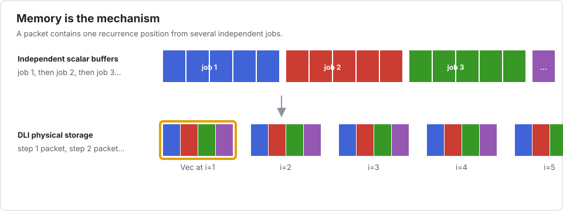

The mental model
Interleave is easier to understand if three different kinds of parallelism remain separate.
| Level | Unit of work | Interleave API |
|---|---|---|
| recurrence | the next position inside one problem | your kernel loop |
| SIMD | the same position in several independent problems | Vec{P,T} elements |
| tasks | groups of SIMD packets | parallel_apply! |
The first level is sequential. The other two exploit independence around it.
On a GPU the mapping changes, not the algorithm: one work item owns one complete recurrence and neighbouring work items span the independent population. See GPU execution: recurrence per work item for the shared KernelAbstractions implementation and its Metal, CUDA, and AMDGPU targets.
Data Layout Interleaving
Suppose each problem owns a vector of length n, and there are nbatch problems. The logical user view is:
(nbatch, n) scalarsWith packet size P, Interleave stores:
(n, cld(nbatch, P)) values of type Vec{P,T}Each packed value contains one position from P problems. A kernel walks a dense vector of these values. Its dependency remains sequential along n; its arithmetic is SIMD across the batch.

This arrangement is often called an array of structures of arrays (AoSoA). “Data Layout Interleaving” emphasizes why it is used here: independent recurrence chains are interleaved just enough to form vector packets.
Why packed storage is native
The hot parent is directly a dense Base.Array{Vec{P,T}}; the multidimensional Interleave.Array wrapper supplies the logical scalar view. In other words, the implementation uses the second of two plausible designs: store vector blocks natively, then wrap them as a scalar batch. It does not keep a scalar parent and reinterpret it into vectors on every kernel access.
That distinction is measurable in Julia. On the same Thomas P=16 experiment, native packed storage took 2.17 ms. A raw-pointer view over scalar storage took 2.79 ms, reinterpret indexing 3.44 ms, vload 4.92 ms, and a manual lane loop 9.77 ms. The bytes were equivalent; the optimizer's view of indexing was not. parent(A) therefore exposes the native packed array used by the kernel, while scalar indexing remains a setup, I/O, and validation path.
What “vectorized by construction” guarantees
Changing an element to Vec{P,T} makes supported arithmetic explicitly vector-valued before LLVM's loop-vectorization heuristics run. This is a much stronger structural condition than hoping the compiler recognizes independent recurrence iterations. It is not, however, an absolute promise about every final instruction: LLVM may split a wide packet into native registers, scalarize an unsupported operation, introduce a helper call, or spill under register pressure.
Interleave therefore treats “pure SIMD” as an auditable contract for each kernel and target:
- exact scalar-to-packed tests establish semantic equivalence;
- typed LLVM must contain the expected vector values;
- native assembly must show vector arithmetic and no harmful hot-loop spills;
- BenchmarkTools must confirm that the structure improves runtime.
Thomas passes that audit through P=32 on the measured M1 and closely matches Legolas++. At P=64, vector stack traffic appears, illustrating why the last two checks cannot be replaced by a type-level theorem.
One kernel, two meanings of an element
The central abstraction is not a macro or a compiler pass. It is the element type:
packtype(Float32, Val(1)) === Float32
packtype(Float32, Val(8)) === Vec{8,Float32}If a kernel uses only operations defined for both types, Julia specializes the same source for scalar and packed inputs. Local variables derived from array elements become packed automatically.
This gives Interleave an unusual but useful separation:
- the algorithm decides dependency order;
- the container type decides the SIMD axis;
- the driver name decides whether tasks are launched.
Why this is not ordinary auto-vectorization
Auto-vectorization normally looks for independent iterations in a loop. A recurrence tells the compiler those iterations are dependent, so it must preserve their order. Interleave does not ask the compiler to disprove that dependency. It presents several independent values as one explicit SIMD element.
Nor is this merely multithreading. Threads operate on chunks of packets and have much higher granularity. SIMD happens inside one core and is available through plain apply!.
What Interleave deliberately does not do
Interleave does not:
- discover whether two problems are independent;
- convert arbitrary control flow into masks;
- choose the best packet size automatically;
- make a kernel faster merely because it is packed;
- hide task creation inside a supposedly sequential call;
- port the recursive shape system or expression-template machinery of Legolas++.
Julia already supplies multidimensional arrays, views, specialization, and dispatch. The port keeps the DLI programming idea and discards infrastructure that existed mainly to work around C++ constraints.
The synchronization rule
Lanes should execute the same control-flow shape. Lane-varying arithmetic is fine; a lane that needs a different number of iterations or exits early is a poor match. Horizontal operations that combine lanes also change the meaning of the batch and should remain outside the kernel unless they are explicitly part of the algorithm.